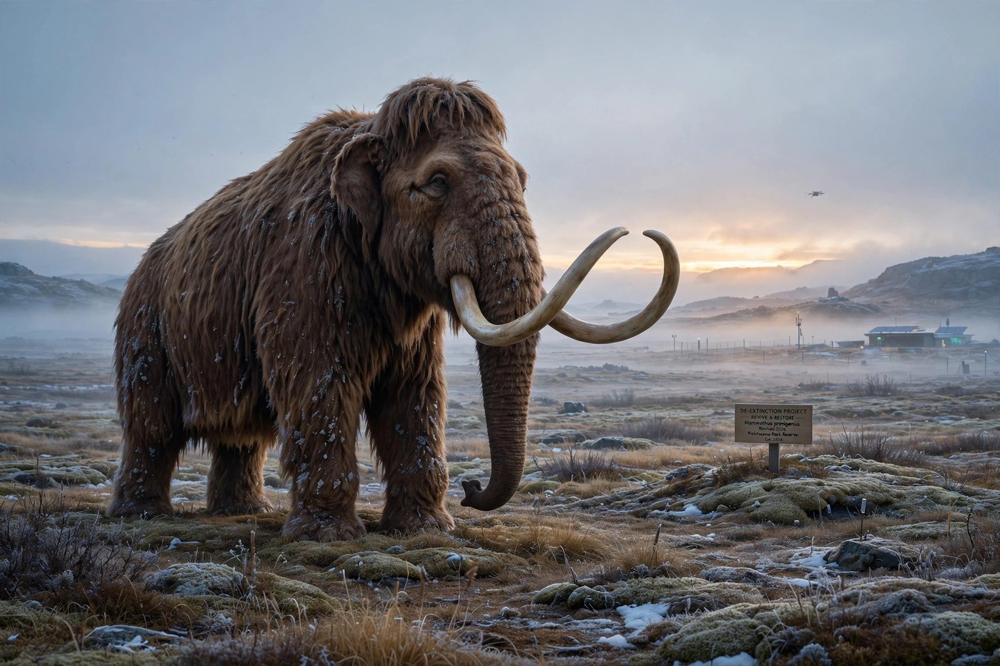

| De-extinction | |
|---|---|
 | |
| Also called | Resurrection biology; species revivalism |
| Methods | Cloning; genome editing; selective back-breeding |
| Notable candidates | Woolly mammoth; passenger pigeon; thylacine; aurochs |
| Only success | Pyrenean ibex (2003; lived minutes) |
De-extinction (also known as resurrection biology, or species revivalism) is the process of generating an organism that either resembles or is an extinct species. There are several ways to carry out the process of de-extinction. Cloning is the most widely proposed method, although genome editing and selective breeding have also been considered. Similar techniques have been applied to certain endangered species, in hopes of boosting their genetic diversity.
Cloning uses a preserved nucleus from the extinct animal, transferred into the egg of a close living relative. This produced the only verified, if brief, de-extinction: in 2003 a cloned Pyrenean ibex (bucardo) was born in Spain, surviving only a few minutes because of a lung defect. Genome editing instead splices genes from the extinct species into the genome of a living relative — the approach pursued for the woolly mammoth, using Asian elephants. Back-breeding selectively breeds living descendants for ancestral traits, as in projects aiming to recreate the aurochs from Heck and Tauros cattle.
Frequently discussed candidates include the woolly mammoth, the passenger pigeon, the thylacine (Tasmanian tiger), the dodo, the quagga, and the gastric-brooding frog. In 2021 the company Colossal Biosciences was founded to pursue mammoth and thylacine revival; in 2025 it announced gene-edited "dire wolves," a claim disputed by many scientists who regard the animals as modified grey wolves.
Critics argue that de-extinction would divert resources from conserving living species, that revived proxy organisms are not true members of the extinct species, and that habitats suitable for many extinct animals no longer exist. Supporters counter that the technologies developed benefit endangered species and that restored proxies could revive lost ecosystem functions, such as mammoth-steppe grazing.
Woolly mammoth · Passenger pigeon · Thylacine · Cloning · CRISPR